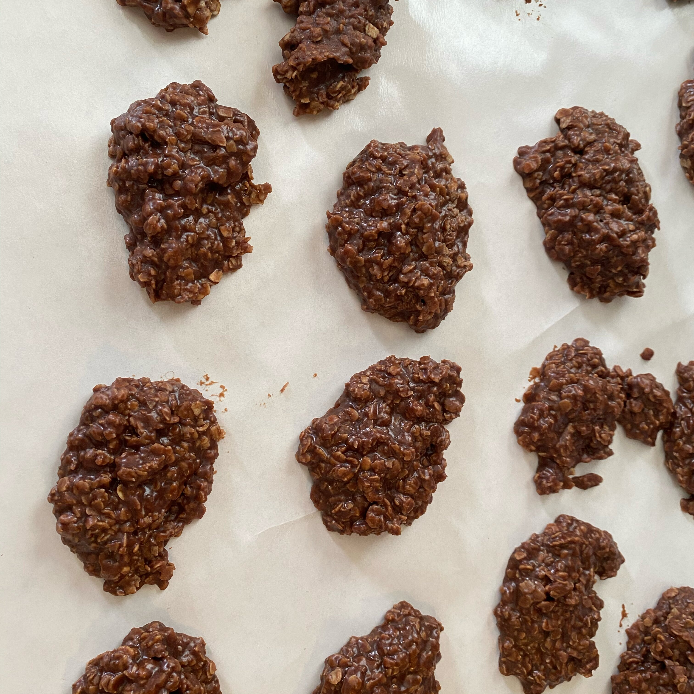

No Bake Cookies

Description:
Oatmeal, peanut butter, and chocolate no bake cookies.
You can choose what type of cookie you make, my favorite is the most basic, simply chocolate without peanutbutter.
Ingredients:
- 3 tablespoons unsweetened cocoa powder
- 2 cups white sugar
- ½ cup milk
- ½ cup butter
- 3 cups quick cooking oats
- ½ cup crunchy peanut butter
- 1 tablespoon vanilla extract
Directions:
- Heat cocoa, sugar, milk and butter over medium heat. Boil these verrrrry slowly (they will turn out better) when they reach the boiling point boil them for no longer than 90-120 seconds.
- Stir together oats, peanut butter and vanilla with a big wooden spoon or Kitchen Aid. Pour the hot mix over the oatmeal mix and drop on wax paper.
Nutrition Facts Per Serving: (12 Servings)
- 348 calories
- protein 5.9g
- carbohydrates 50.7g
- fat 14.7g
- cholesterol 21.1mg
- sodium 112.5mg
For full list, please click here.
Please click here to return to main page.